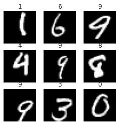
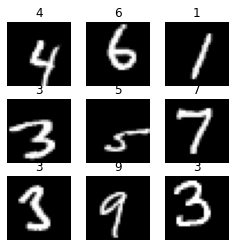
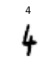
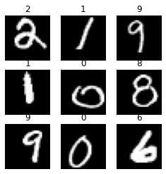

from fastai.vision.all import *Intro
In the first lesson of the course Walk with fastai, the missing pieces for success, Zachary Mueller explained to us the three levels he sees in fastai APIs. This is different to Jeremy Howard’s consideration, who see two levels.
By the second lesson we had made use of those levels with different datasets.
In this post we are going to explore the three levels with MNIST dataset, and in the process we will also go step by step in some fastai pieces that were not obvious for me in my beginnings.
Importing fastai library and data
path = untar_data(URLs.MNIST); path, path.ls()(Path('/home/fmussari/.fastai/data/mnist_png'),
(#2) [Path('/home/fmussari/.fastai/data/mnist_png/training'),Path('/home/fmussari/.fastai/data/mnist_png/testing')])(path/'training').ls()(#10) [Path('/home/fmussari/.fastai/data/mnist_png/training/4'),Path('/home/fmussari/.fastai/data/mnist_png/training/7'),Path('/home/fmussari/.fastai/data/mnist_png/training/9'),Path('/home/fmussari/.fastai/data/mnist_png/training/5'),Path('/home/fmussari/.fastai/data/mnist_png/training/8'),Path('/home/fmussari/.fastai/data/mnist_png/training/0'),Path('/home/fmussari/.fastai/data/mnist_png/training/2'),Path('/home/fmussari/.fastai/data/mnist_png/training/1'),Path('/home/fmussari/.fastai/data/mnist_png/training/6'),Path('/home/fmussari/.fastai/data/mnist_png/training/3')]We can see that the data is stored in training and testing folders.
Each image is then stored in folders that represent its labels: 0, 1, 2, … 9.
File names and transforms
fnames = get_image_files(path)
fnames(#70000) [Path('/home/fmussari/.fastai/data/mnist_png/training/4/47823.png'),Path('/home/fmussari/.fastai/data/mnist_png/training/4/45709.png'),Path('/home/fmussari/.fastai/data/mnist_png/training/4/49105.png'),Path('/home/fmussari/.fastai/data/mnist_png/training/4/746.png'),Path('/home/fmussari/.fastai/data/mnist_png/training/4/13451.png'),Path('/home/fmussari/.fastai/data/mnist_png/training/4/54187.png'),Path('/home/fmussari/.fastai/data/mnist_png/training/4/30554.png'),Path('/home/fmussari/.fastai/data/mnist_png/training/4/30886.png'),Path('/home/fmussari/.fastai/data/mnist_png/training/4/52580.png'),Path('/home/fmussari/.fastai/data/mnist_png/training/4/38515.png')...]Item and Batch transforms
item_tfms = [CropPad(34), RandomCrop(size=28), ToTensor()]
batch_tfms = [IntToFloatTensor(), Normalize()]Transforms in action
Here we are going to explore what each transform does.
im = PILImageBW.create(fnames[0])
imCropPad(50)(im)RandomCrop(size=28)(CropPad(50)(im))Applying the first two sequentially with reduce:
from functools import reduce
reduce(lambda t,f: f(t), item_tfms[:2], im)Or with a for loop:
im0 = im
for tfm in item_tfms[:2]:
im0 = tfm(im0)
im0
What about applying also ToTensor()
reduce(lambda t,f: f(t), item_tfms, im).shapetorch.Size([1, 28, 28])High Level API
For this level we are going to use ImageDataLoaders, let’s explore some of its methods:
print([f for f in dir(ImageDataLoaders) if f[:4]=='from'])['from_csv', 'from_dblock', 'from_df', 'from_dsets', 'from_folder', 'from_lists', 'from_name_func', 'from_name_re', 'from_path_func', 'from_path_re']For this dataset from_folder method is the way to go.
help(ImageDataLoaders.from_folder)Help on method from_folder in module fastai.vision.data:
from_folder(path, train='train', valid='valid', valid_pct=None, seed=None, vocab=None, item_tfms=None, batch_tfms=None, img_cls=<class 'fastai.vision.core.PILImage'>, *, bs: 'int' = 64, val_bs: 'int' = None, shuffle: 'bool' = True, device=None) method of builtins.type instance
Create from imagenet style dataset in `path` with `train` and `valid` subfolders (or provide `valid_pct`)
Data Loaders
dls = ImageDataLoaders.from_folder(
path, train='training', valid='testing',
item_tfms=item_tfms,
batch_tfms=batch_tfms
)type(dls)fastai.data.core.DataLoadersdls.show_batch(figsize=(4,4))
dls.bs #default batch size64print(dls.vocab.o2i){'0': 0, '1': 1, '2': 2, '3': 3, '4': 4, '5': 5, '6': 6, '7': 7, '8': 8, '9': 9}dls.train_ds, dls.valid_ds((#60000) [(PILImage mode=RGB size=28x28, TensorCategory(4)),(PILImage mode=RGB size=28x28, TensorCategory(4)),(PILImage mode=RGB size=28x28, TensorCategory(4)),(PILImage mode=RGB size=28x28, TensorCategory(4)),(PILImage mode=RGB size=28x28, TensorCategory(4)),(PILImage mode=RGB size=28x28, TensorCategory(4)),(PILImage mode=RGB size=28x28, TensorCategory(4)),(PILImage mode=RGB size=28x28, TensorCategory(4)),(PILImage mode=RGB size=28x28, TensorCategory(4)),(PILImage mode=RGB size=28x28, TensorCategory(4))...],
(#10000) [(PILImage mode=RGB size=28x28, TensorCategory(4)),(PILImage mode=RGB size=28x28, TensorCategory(4)),(PILImage mode=RGB size=28x28, TensorCategory(4)),(PILImage mode=RGB size=28x28, TensorCategory(4)),(PILImage mode=RGB size=28x28, TensorCategory(4)),(PILImage mode=RGB size=28x28, TensorCategory(4)),(PILImage mode=RGB size=28x28, TensorCategory(4)),(PILImage mode=RGB size=28x28, TensorCategory(4)),(PILImage mode=RGB size=28x28, TensorCategory(4)),(PILImage mode=RGB size=28x28, TensorCategory(4))...])Mid Level API
With the mid level API we define blocks according to the problem. In this case we have image inputs and categories to predict.
blocks
blocks = (ImageBlock(cls=PILImageBW), CategoryBlock)GrandparentSplitter and parent_label
It was transparent to us in the high level API, but what from_folder method used to split the dataset into train and valid was GrandparentSplitter. Lets see how it works:
splitter = GrandparentSplitter(train_name='training', valid_name='testing')Let’s create a tiny subset of fnames, having training and testing samples, and see how splitter works:
sub_fnames = fnames[:2] + fnames[-2:]
sub_fnames(#4) [Path('/home/fmussari/.fastai/data/mnist_png/training/4/47823.png'),Path('/home/fmussari/.fastai/data/mnist_png/training/4/45709.png'),Path('/home/fmussari/.fastai/data/mnist_png/testing/3/7829.png'),Path('/home/fmussari/.fastai/data/mnist_png/testing/3/2300.png')]splitter(sub_fnames)([0, 1], [2, 3])We can see it is returnin a tuple with two list of indices, one for training, and one for validations, according to the folder the images are located in.
t, v = splitter(fnames)
len(t), len(v)(60000, 10000)The high level API also used the parent_label function under the hood. It returns the label from the parent folder of each image.
parent_label(sub_fnames[0]), parent_label(sub_fnames[2])('4', '3')PILImageBW.create(sub_fnames[2])DataBlock
dblock = DataBlock(
blocks=blocks,
get_items=get_image_files,
splitter=splitter,
get_y=parent_label,
item_tfms=item_tfms,
batch_tfms=batch_tfms
)type(dblock)fastai.data.block.DataBlockData Loaders
dls = dblock.dataloaders(path, bs=64)dls.show_batch(figsize=(4,4))
dls.bs64print(dls.vocab.o2i){'0': 0, '1': 1, '2': 2, '3': 3, '4': 4, '5': 5, '6': 6, '7': 7, '8': 8, '9': 9}dls.train_ds, dls.valid_ds((#60000) [(PILImageBW mode=L size=28x28, TensorCategory(4)),(PILImageBW mode=L size=28x28, TensorCategory(4)),(PILImageBW mode=L size=28x28, TensorCategory(4)),(PILImageBW mode=L size=28x28, TensorCategory(4)),(PILImageBW mode=L size=28x28, TensorCategory(4)),(PILImageBW mode=L size=28x28, TensorCategory(4)),(PILImageBW mode=L size=28x28, TensorCategory(4)),(PILImageBW mode=L size=28x28, TensorCategory(4)),(PILImageBW mode=L size=28x28, TensorCategory(4)),(PILImageBW mode=L size=28x28, TensorCategory(4))...],
(#10000) [(PILImageBW mode=L size=28x28, TensorCategory(4)),(PILImageBW mode=L size=28x28, TensorCategory(4)),(PILImageBW mode=L size=28x28, TensorCategory(4)),(PILImageBW mode=L size=28x28, TensorCategory(4)),(PILImageBW mode=L size=28x28, TensorCategory(4)),(PILImageBW mode=L size=28x28, TensorCategory(4)),(PILImageBW mode=L size=28x28, TensorCategory(4)),(PILImageBW mode=L size=28x28, TensorCategory(4)),(PILImageBW mode=L size=28x28, TensorCategory(4)),(PILImageBW mode=L size=28x28, TensorCategory(4))...])Low Level API
We already created a splitter, lets now split the data.
splits=splitter(fnames)
len(splits[0]), len(splits[1])(60000, 10000)Datasets
dsrc = Datasets(
items=fnames,
tfms=[[PILImageBW.create], [parent_label, Categorize]],
splits=splits
)type(dsrc)fastai.data.core.Datasetsshow_at(dsrc.train, 3);
Exploring what each tfms does
PILImageBW.create(fnames[0])l = parent_label(fnames[0])
l'4'Categorize(l)Categorize -- {'vocab': ['4'], 'sort': True, 'add_na': False}:
encodes: (Tabular,object) -> encodes
(object,object) -> encodes
decodes: (Tabular,object) -> decodes
(object,object) -> decodesData Loaders
dls = dsrc.dataloaders(
bs=128,
after_item=item_tfms,
after_batch=batch_tfms
)dls.show_batch(figsize=(4,4))
dls.bs128print(dls.vocab.o2i){'0': 0, '1': 1, '2': 2, '3': 3, '4': 4, '5': 5, '6': 6, '7': 7, '8': 8, '9': 9}dls.train_ds, dls.valid_ds((#60000) [(PILImageBW mode=L size=28x28, TensorCategory(4)),(PILImageBW mode=L size=28x28, TensorCategory(4)),(PILImageBW mode=L size=28x28, TensorCategory(4)),(PILImageBW mode=L size=28x28, TensorCategory(4)),(PILImageBW mode=L size=28x28, TensorCategory(4)),(PILImageBW mode=L size=28x28, TensorCategory(4)),(PILImageBW mode=L size=28x28, TensorCategory(4)),(PILImageBW mode=L size=28x28, TensorCategory(4)),(PILImageBW mode=L size=28x28, TensorCategory(4)),(PILImageBW mode=L size=28x28, TensorCategory(4))...],
(#10000) [(PILImageBW mode=L size=28x28, TensorCategory(4)),(PILImageBW mode=L size=28x28, TensorCategory(4)),(PILImageBW mode=L size=28x28, TensorCategory(4)),(PILImageBW mode=L size=28x28, TensorCategory(4)),(PILImageBW mode=L size=28x28, TensorCategory(4)),(PILImageBW mode=L size=28x28, TensorCategory(4)),(PILImageBW mode=L size=28x28, TensorCategory(4)),(PILImageBW mode=L size=28x28, TensorCategory(4)),(PILImageBW mode=L size=28x28, TensorCategory(4)),(PILImageBW mode=L size=28x28, TensorCategory(4))...])Conclusion
- We ended with the same
DataLoadersin three different ways. - As Zachary puts it, the higher the level of the API, the lesser the flexibility, but also less complexity.
- He also pointed out that the mid level API is made with the building blocks of the framework.